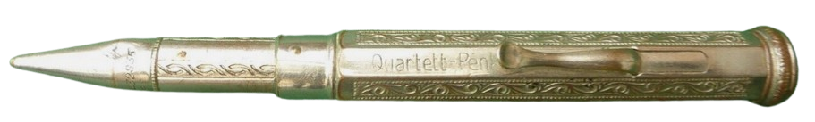

Four in Hand Vierfarbstift
Four in Hand 4 colour pencil
Stand: 28.04.2026
Der Four in Hand war ein Vierfarb-Schiebebuntstift aus den 1920er-40er Jahren aus deutscher und englischer Herstellung.
Er war ein echtes Massenprodukt und dadurch einer der bekanntesten Vierfarbstifte.
1939 kostete 1 Stück nur 0.75 Reichsmark - das wären 2026 um die 5 Euro.
Sein Verbreitungsgebiet war primär Großbritannien, Deutschland, und Frankreich.
Mögliche Hersteller sind leider nicht bekannt.
Hauptsächlich kann man zwei Typen unterscheiden:

 Die Unterscheidung liegt darin, dass die 'äußere' Hülse bei der zweiten Version nicht über die 'innere' hinausschaut.
Die Unterscheidung liegt darin, dass die 'äußere' Hülse bei der zweiten Version nicht über die 'innere' hinausschaut.
Die erste Version wurde in den 1920ern in Deutschland hergestellt.
Die zweite Version wurde in den 1930ern-40ern in Deutschland und politisch bedingt dann auch in England hergestellt.
Das zugrundeliegende Patent wurde 1924 von einem Tscheche und Österreicher angemeldet.
Die Rechte wurden aber an eine britische Firma übertragen. Wieso man nicht von Anfang an in England produzierte, ist mir nicht klar.
Aufbau
Die Hinter- und Vorderhülse sind gegeneinander verdreh- und verschiebbar.Drehen wählt die Mine aus, Zusammenschieben schiebt sie hervor.
Dabei ist der Vorschub stufenlos: Wenn die Mine abgeschrieben ist, werden die Hälften ein Stück weiter zusammengedrückt.
Zum Minenwechsel wird die Kappe an der Vorderhülse abgeschraubt und der zu wechselnde Halter genügend weit vorgeschoben. (siehe Punkt 2 hier).
Namensherkunft
"Four-in-Hand" ist ein auch heute noch weit verbreitet genutzter britischer Krawattenknoten.Dieser hatte einer Theorie zufolge seine Herkunft im Four-in-Hand-Coaching-Club Londons, welcher wiederum diesen Namen trug, weil man beim Four-in-Hand-Fahren mit vier Pferden mit vier Zügeln in derselben Hand fuhr.
An dieser Phrase angelehnt benannte man wohl auch den Stift - da man bei diesem natürlich vier Farben in der Hand hält.
Der Stift ist zusätzlich bekannt unter:
- "Penkala Quartett" (Deutschland, 1.Version)
- "Foursome" (England, 2. Version)
- "Quatricolor" (Frankreich, 2. Version).
Die 2. Version wurde auch von Staedtler, A.W. Faber-Castell und Johann Faber verkauft.